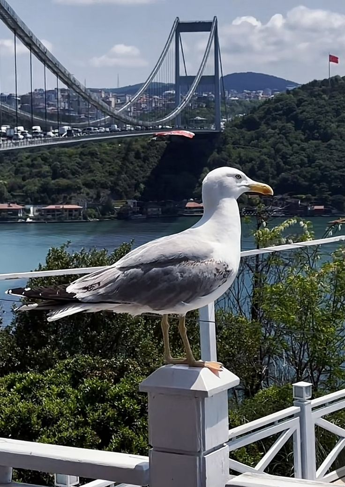
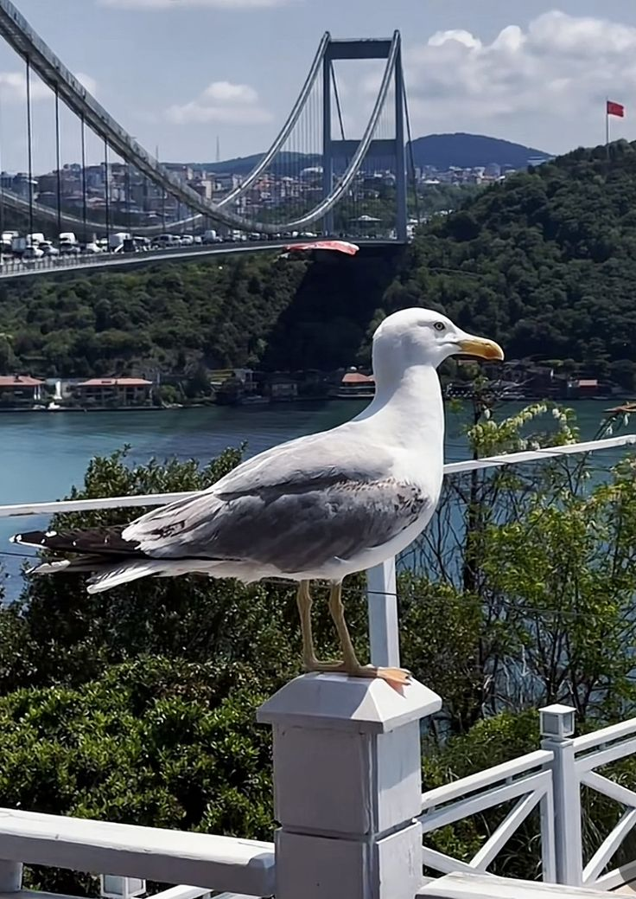

Fotoğraf çekmeyi severim burda da en sevdiğim doğa fotoğrafını görüyorsunuz.(Övünmek gibi olmasın da ben çektim)
Bu videoda Yunus İnal kanalındaki eşsiz videolardan birine göz atıyoruz.
"Kod yalan söylemez, yorumlar bazen söyler."
- Ron Jeffries
Fotoğraf çekmeyi severim burda da en sevdiğim doğa fotoğrafını görüyorsunuz.(Övünmek gibi olmasın da ben çektim)
Bu videoda Yunus İnal kanalındaki eşsiz videolardan birine göz atıyoruz.